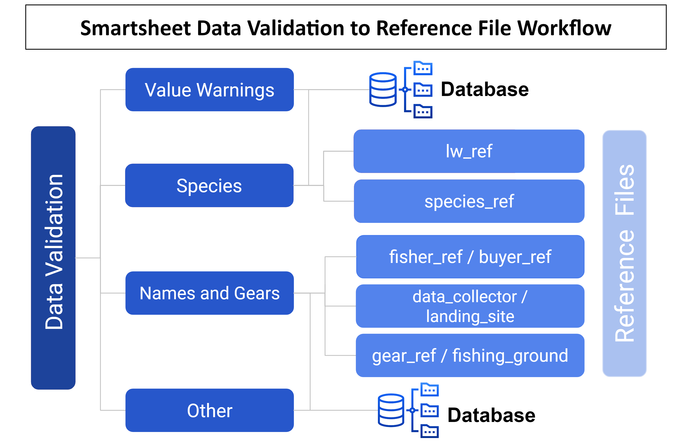

La validation des données
Guide de Validation des Données sur les Pêches
Toutes les données qui transitent par le système de données sur les pêches sont validées dans Smartsheet. Les données sont envoyées pour validation selon trois scénarios; 1) de nouveaux noms ou “autres” informations sont ajoutés manuellement dans Kobo Collect, 2) une valeur numérique dépasse les seuils établis ou 3) les noms de l’ensemble de données ne correspondent pas dans un fichier de référence. Une fois les données validées, les ensembles de données de la base de données et les tables de référence sont mis à jour. Les tables de référence servent d’entrées pour les listes déroulantes dans les formulaires KoboToolbox et contiennent des données qui sont ajoutées aux ensembles de données via des jointures. Voir l’arbre de décision ci-dessous (figure 1).
Les données déclenchées pour validation sont envoyées à l’une des quatre tables: 1) Noms et engins, 2) Avertissements de valeur, 3) Espèces ou 4) Autre. Les instructions ci-dessous détaillent le processus de validation des données dans la vue dynamique Smartsheet pour les quatre tableaux de validation. Chaque table de validation nécessitera soit de sélectionner la valeur de champ correcte dans une liste déroulante, soit de saisir manuellement les valeurs correctes. Le processus sera annexé pour les futurs besoins de validation des données, au besoin.
Le tableau de validation “Noms et engins” contient de nouvelles données provenant de toutes les enquêtes Kobo, y compris les nouveaux noms des pêcheurs, des acheteurs, des collecteurs de données, des lieux de pêche, des sites de débarquement et des engins. Les “Avertissements de valeur” contiennent des informations numériques collectées à partir de l’enquête de surveillance des débarquements ou de profilage des débarquements qui signalaient une valeur de prix, de poids ou de longueur basée sur un seuil préétabli. Les seuils préétablis pour les avertissements de poids et de longueur proviennent de lw_ref; et les avertissements de prix proviennent de min_max_ref. Le tableau de validation des espèces contient des photos et de nouveaux noms locaux de toutes les enquêtes afin de valider les nouvelles espèces à l’aide d’un processus de double vérification. Enfin, le tableau de validation des données “Autres” contient les “autres” informations collectées à partir du Profilage des débarquements, du Profilage communautaire ou de l’Enquête auprès des ménages et est principalement validé à des fins de traduction.
Des messages électroniques quotidiens sont envoyés avec des informations et des liens sur la façon de terminer la validation des données (voir les instructions détaillées ci-dessous). Des notifications supplémentaires de Smartsheet peuvent être envoyées par e-mail pour assurer le suivi des sélections de validation des données incomplètes, si nécessaire.
Étape 1 : Fournissez un point de contact, des noms et des adresses e-mail pour les personnes responsables de la validation des données.
L’organisation gérant plusieurs partenaires peut fournir toutes les informations de contact.
Les partenaires individuels peuvent fournir les coordonnées du point de contact.
Les points de contact recevront des notifications de validation des données par e-mail.
Étape 2: Vérifiez votre courrier électronique pour une demande de validation des données.
Vous recevrez un e-mail de “Smartsheet Automation” (Figure 2)
L’e-mail contiendra un message avec des liens pour procéder à la validation via une “Vue dynamique” ou une “Demande ouverte”. La vue dynamique est un format de tableau et la demande ouverte vous dirigera vers un formulaire de validation.
Pour ouvrir avec “Affichage dynamique” (étape 3, Option A), cliquez sur le lien qui commence par “https://dynamicview.smarthseet.com….”
Pour ouvrir le formulaire de demande de mise à jour (étape 3, Option B), cliquez sur le bouton bleu “Ouvrir la demande”
Un aperçu des entrées à valider apparaîtra sous ce message, mais vous ne pourrez valider aucune donnée directement dans l’e-mail
Au bas de l’e-mail, il y a un lien pour “Aller à la feuille”; cependant, la feuille sous-jacente a un accès restreint. Veuillez consulter la validation de vos données via la vue dynamique, la demande ouverte ou votre rapport spécifique au partenaire (à venir).
Figure 1: Arbre décisionnel de validation des données.

Figure 2: Exemple d’E-Mail de Validation Smartsheet

Étape 3, Option A: Terminez la validation de vos données via Dynamic View (recommandé)
Pour cette option, vous devrez créer un compte Smartsheet gratuit. Vous serez dirigé à partir de l’e-mail pour créer un compte.
Cliquez sur le lien Affichage dynamique dans la demande par e-mail.
Une nouvelle fenêtre de navigateur Internet s’ouvrira avec une configuration de type tableau pour toutes les entrées. Ici, vous pouvez facilement faire défiler toutes les entrées qui nécessitent une validation.
Cliquez sur une ligne pour commencer la validation.
Un panneau “Détails” apparaîtra à droite.
Passez en revue les champs de contexte et remplissez les champs de validation. Les champs de validation contiennent les données qui seront transférées vers l’ensemble de données final (tableau 1).
Laissez un commentaire, SEULEMENT S’il y a quelque chose qui nécessite notre attention. Le personnel de Blue Ventures (BV) examinera les commentaires et répondra de manière appropriée.
Cliquez sur le bouton bleu “Enregistrer” pour enregistrer votre sélection.
Une fois validée, cette ligne disparaîtra de votre vue dynamique.
Cliquez sur la ligne suivante et répétez les étapes pour terminer la validation de toutes les entrées.
Vous pouvez quitter et entrer à nouveau en cliquant sur le lien Affichage dynamique de votre e-mail ou en vous connectant à votre compte à tout moment. Vous n’avez pas besoin de valider toutes les entrées en une seule séance.
Vous pouvez ajouter ce lien à vos favoris et y revenir à tout moment.
Tableau 1: Champs ou colonnes primaires dans les tables de validation. Les champs de contexte fournissent les informations nécessaires à la validation des données. Les champs de validation sont remplis avec des données qui seront transférées aux ensembles de données maîtres. Seuls les champs de validation peuvent être modifiés. Certains champs ne sont visibles que dans le panneau “Détails” lorsqu’une ligne est cliquée dans le tableau de la vue dynamique.
| Champ de table de validation | Description du champ | Type de champ |
|---|---|---|
| All Data Validation Tables | ||
| partner | nom de l’organisation collectant les données | contexte |
| admin3_landed | Village ou sous-village où les captures ont été débarquées et enregistrées | contexte |
| data_collector | Nom de la personne qui a collecté les données dans Kobo (recenseur) | contexte |
| Names and Gears | ||
| kobo_field | Le champ du formulaire KoboCollect qui doit être validé ou le nom qui ne correspond pas dans les fichiers de référence. | contexte |
| new_data | La valeur qui a été saisie pour le champ kobo_field correspondant | contexte |
| ref_match1 | Nom étroitement apparié qui existe déjà dans la base de données. S’il est vide, aucun nom existant ne correspond au nom de la colonne “new_data” | contexte |
| ref_match2 | Nom étroitement apparié qui existe déjà dans la base de données. S’il est vide, aucun nom existant ne correspond au nom de la colonne “new_data” | contexte |
| ref_match3 | Nom étroitement apparié qui existe déjà dans la base de données. S’il est vide, aucun nom existant ne correspond au nom de la colonne “new_data” | contexte |
| validation_options | Sélectionnez le champ avec les données correctes (new_data, ref_match1, ref_match2, ref_match3), entrez une autre valeur (autre) ou supprimez (supprimez la ligne de l’analyse car les données ne peuvent pas être validées). Requis. Visible uniquement dans le panneau Détails. L’entrée disparaîtra une fois les données validées. | validation |
| other | Entrez une autre valeur si aucune des options de validation n’est correcte. Obligatoire SI “autre” est sélectionné dans validation_options. Visible uniquement dans le panneau Détails. | validation |
| landings_submission_ids | Liste des identifiants de soumission dans lesquels cette nouvelle valeur de données apparaît, à partir du formulaire Kobo de surveillance des débarquements | contexte |
| profiling_submission_ids | Liste des identifiants de soumission dans lesquels cette nouvelle valeur de données apparaît, à partir du formulaire Kobo de profilage des débarquements | contexte |
| hhs_submission_ids | Liste des identifiants de soumission dans laquelle cette nouvelle valeur de données apparaît, à partir du formulaire Kobo de l’enquête auprès des ménages. | contexte |
| species_group | Le groupe d’espèces associé au nouveau nom d’engin, tel que collecté dans le formulaire Kobo. Cela n’apparaîtra que si le “kobo_field” est une catégorie d’équipement. | contexte |
| gear_type | Requis POUR valider de nouveaux noms d’engins. Une liste déroulante des types d’engins à associer au nom d’engin validé. | validation |
| fisher_gender | Le sexe associé au nouveau pêcheur, tel que collecté dans le formulaire Kobo. Cela n’apparaîtra que si le “kobo_field” est un nom de pêcheur. | contexte |
| buyer_gender | Le sexe associé au nouvel acheteur, tel que collecté dans le formulaire Kobo. Cela n’apparaîtra que si le “kobo_field” est un nom d’acheteur. | contexte |
| Value Warnings | ||
| fisher_name | Nom du pêcheur qui a débarqué la prise | contexte |
| date_landed | Date à laquelle la capture a été débarquée | contexte |
| local_name | Nom local de l’espèce | contexte |
| warning_calc | Valeur unitaire: poids / individu, prix / poids, longueur / individu, largeur / individu | contexte |
| warning | Type d’avertissement | contexte |
| numerator | Valeur du numérateur d’avertissement: poids, prix, longueur | contexte |
| numerator_unit | Unit of numerator: kg, g, lb, ons, USD, IDR, PHP, cm | contexte |
| denominator | Valeur du dénominateur: nombre, poids | contexte |
| denominator_unit | Unité du dénominateur: nombre, kg, g, lb, on | contexte |
| correct | Y = les valeurs sont correctes, N=les valeurs sont incorrectes, Remove = retirer de l’analyse car les valeurs ne peuvent pas être validées. Requis. | validation |
| correct_numerator | Si correct = Y, les valeurs sont remplies automatiquement, Si correct = N, entrez la valeur correcte | validation |
| correct_denominator | Si correct = Y, les valeurs sont remplies automatiquement, Si correct = N, entrez la valeur correcte | validation |
| correct_numerator_unit | Si les unités du numérateur_sont incorrectes, sélectionnez l’option correcte dans la liste déroulante | validation |
| data_origin | Jeu de données d’où proviennent les données (suivi des débarquements ou profilage). | contexte |
| submission_id | Identifiant de soumission du formulaire Kobo. Utilisez-le pour comparer avec des données brutes, si nécessaire, pour la validation. | contexte |
| Species | ||
| data_origin | Origine ou source des données ‘ ‘débarquements’ ‘ ‘profilage’, ‘communauté_profilage’ ou ’ hhs’ | contexte |
| admin1 | Admin1 où la capture a été débarquée et enregistrée. | contexte |
| admin2 | Admin2 où la capture a été débarquée et enregistrée. | contexte |
| fisher_name | Nom du pêcheur associé à ces nouvelles données sur l’espèce. | contexte |
| new_species_photo | Lien vers la photo qui a été soumise dans Kobo Collect | contexte |
| new_data | La valeur qui a été saisie en tant que nouveau nom local d’espèce dans Kobo Collect OU un nom local et un identifiant de nom scientifique (localname_scientificspecies) qui ne correspondent plus à un nom trouvé dans species _ref | contexte |
| ref_match1 | Nom étroitement apparié qui existe déjà dans la base de données. S’il est vide, aucun nom existant ne correspond au nom de la colonne “new_data” | contexte |
| ref_match2 | Nom étroitement apparié qui existe déjà dans la base de données. S’il est vide, aucun nom existant ne correspond au nom de la colonne “new_data” | contexte |
| ref_match3 | Nom étroitement apparié qui existe déjà dans la base de données. S’il est vide, aucun nom existant ne correspond au nom de la colonne “new_data” | contexte |
| eng_common_name_new | Nom commun anglais de la nouvelle espèce. Veuillez fournir si connu, sinon laissez en blanc. (Non requis) | validation |
| scientific_family_new | Nom de famille scientifique de la nouvelle espèce. Veuillez fournir si connu, sinon laissez en blanc. (Non requis) | validation |
| scientific_species_new | Nom scientifique de la nouvelle espèce. Veuillez fournir si connu, sinon laissez en blanc. Obligatoire: Si le nom de l’espèce est inconnu, veuillez indiquer n’importe quel niveau d’identification taxonomique (par exemple, Nom de famille, nom commun anglais) | validation |
| submission_id | Identifiant de soumission du formulaire Kobo. Utilisez-le pour comparer avec des données brutes, si nécessaire, pour la validation. | contexte |
| validation_options | Sélectionnez le champ avec les données correctes (local_name_new, ref_match1, ref_match2, ref_match3), entrez une autre valeur (autre) ou supprimez (supprimez la ligne de l’analyse car les données ne peuvent pas être validées). Requis. Visible uniquement dans le panneau Détails. L’entrée disparaîtra une fois les données validées. | validation |
| other | Entrez une autre valeur si aucune des options de validation n’est correcte. Obligatoire SI “autre” est sélectionné dans validation_options. Visible uniquement dans le panneau Détails. | validation |
| latest_comment | Cette colonne stocke le dernier commentaire qui a été fait pour cette ligne. Pour afficher l’intégralité de la discussion des commentaires pour cette ligne, cliquez simplement n’importe où sur la ligne. Le panneau de détails apparaîtra et cliquez sur l’onglet” Commentaires ” pour afficher tous les commentaires de cette ligne. | automatique |
| Other | ||
| kobo_field | Le champ du formulaire KoboToolbox qui doit être validé. Cela pourrait provenir d’une question du Profilage des débarquements, du Profilage communautaire ou de l’Enquête auprès des ménages. | contexte |
| new_data | La valeur qui a été saisie pour le champ kobo_field correspondant | contexte |
| data_origin | Ensemble de données d’où proviennent les données (Profilage des débarquements, Profilage communautaire ou Enquête auprès des ménages). | contexte |
| submission_id | Identifiant de soumission du formulaire Kobo. Utilisez-le pour comparer avec des données brutes, si nécessaire, pour la validation. | contexte |
| validation_options | Sélectionnez le champ avec les données correctes( new_data), entrez une autre valeur (other) ou supprimez (supprimez la ligne de l’analyse car les données ne peuvent pas être validées). Requis. Visible uniquement dans le panneau Détails. L’entrée disparaîtra une fois les données validées. | validation |
| other | Entrez une autre valeur si aucune des options de validation n’est correcte. Obligatoire SI “autre” est sélectionné dans validation_options. Visible uniquement dans le panneau Détails. | validation |
| validated_data_english | Requis. Entrez la traduction anglaise du champ new_data ou autre si ’other ” a été sélectionné comme option de validation. Visible uniquement dans le panneau Détails. | validation |
Figure 3: Exemple de Vue dynamique - Avertissements de Valeur

Figure 4: Exemple de Vue dynamique - Panneau de détails

Étape 3, Option B: Terminez la validation de vos données via la ” Demande ouverte’
Pour cette option, vous n’avez pas besoin d’avoir un identifiant de compte Smartsheet .
Cliquez sur le bouton “Ouvrir la demande” dans l’e-mail de validation.
Une nouvelle fenêtre de navigateur Internet s’ouvrira avec une configuration de type formulaire pour chaque entrée
Passez en revue les champs de contexte et remplissez les champs de validation. Les champs de validation contiennent les données qui seront transférées vers l’ensemble de données final (tableau 1).
Cliquez sur Suivant en bas de l’écran pour parcourir chaque entrée à valider.
Pour ignorer une entrée (par exemple, si vous n’êtes pas encore sûr de la réponse à choisir), cliquez sur “Suivant” sans effectuer de sélection dans la colonne “validation_options”. La prochaine entrée pour validation apparaîtra.
Si vous devez quitter la page ou vous arrêter avant que toutes les entrées aient été validées, vos choix doivent être enregistrés la prochaine fois que vous rouvrirez la demande. Lors de l’ouverture pour continuer, cliquez simplement sur “Suivant” jusqu’à ce que vous trouviez une entrée qui nécessite une validation.
Lorsque vous arrivez à la dernière entrée, cliquez sur “Terminé”. Un message contextuel apparaîtra vous demandant si vous êtes prêt à soumettre votre mise à jour?’:
Cliquez sur” Revenir en arrière ” si vous avez besoin de revoir
Cliquez sur “Soumettre la mise à jour” pour soumettre la validation
Cochez la case “Envoyez-moi une copie de mes réponses” si vous souhaitez qu’une copie de vos réponses vous soit envoyée par e-mail
Si vous cliquez sur “Envoyez-moi une copie de mes réponses”, vous recevrez un e-mail intitulé “Confirmation de mise à jour: Noms et engrenages”.
Il y aura un tableau résumant les entrées qui ont été mises à jour. Les entrées dans lesquelles aucune option n’a été sélectionnée dans” validation_options ” ne seront pas incluses.
Cet e-mail peut contenir un lien vers un nom de feuille “Validation des données - Noms et engrenages”; cependant, l’accès à cette feuille est verrouillé.
Pour voir toute validation restante nécessaire, vous devrez attendre le prochain e-mail de demande de mise à jour ou ouvrir la vue dynamique.
Figure 5: Exemple de format “Requête ouverte”

Questions Fréquemment Posées:
- Plusieurs personnes peuvent-elles travailler sur la validation des données en même temps?
- Oui, cependant, une fois qu’une entrée (ligne) a été validée en vue dynamique, elle ne sera plus visible.
- Ai-je besoin d’un compte Smartsheet?
- Uniquement pour terminer la validation des données via une vue dynamique (c’est-à-dire la vue tableau). Vous n’avez pas besoin d’un compte payant, avec un essai gratuit ou une version gratuite (une fois votre essai terminé), vous pourrez afficher et interagir avec tous les fichiers Smartsheet.
- Que se passe-t-il une fois les données validées?
- Dans certains cas, les données feront l’objet d’un examen supplémentaire par l’équipe Blue Ventures data. Les données validées seront mises à jour dans la base de données et, le cas échéant, les menus déroulants seront mis à jour dans les fichiers et formulaires de référence Kobo (Figure 6). Les données qui n’ont pas été validées n’apparaîtront pas dans les visualisations ou les statistiques du tableau de bord, mais seront disponibles dans le téléchargement des données brutes.
Si à tout moment vous rencontrez des erreurs, avez des questions ou avez besoin d’aide pour terminer la validation des données, veuillez nous contacter à mary.mccabe@blueventures.org.
Figure 6: Validation des données pour référencer le flux de travail du fichier
